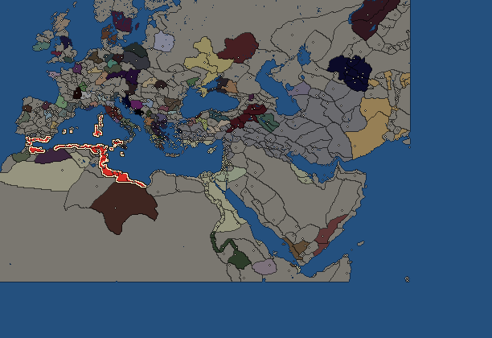
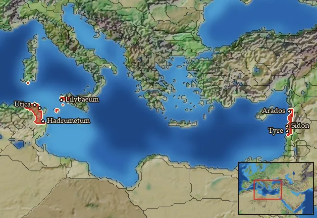

RTR: Imperium Surrectum
RTR: Imperium SurrectumCarthage


- difficulty Easy
- Phoenician culture
- believes
 Phoenician
Phoenician - 28 settlements
- capital Carthage
- 116,800 manpower
- 30 characters
- 20 faction units
- 432 regional units
The campaign brief
"From Africa always something new." – Aristoteles/Plinius the Elder
Phoenicia. A small, but rich land in the East, home of our ancestors. More than half a millennium ago (between 825 and 813 BC), a little expedition from Tyros set out to found a colony in the West. Our records don't tell if they were searching for precious metals, or if the population of the country was becoming too large to feed, or if it was just the will of the gods that led them to the rocky shores of North Africa. But in any case, they founded our wonderful city Carthage. In the space of only a few decades, we became the lords of the North African coast and began to establish colonies of our own on Sardinia and along the western coast. Shortly before the Greeks began to settle Sicily, we built trade outposts on that island as well and afterwards connected them with roads and forts into a system called the Epikrateia.
The Epikrateia stands strong against the Greeks in the East, but it has been challenged many times over the years. The powerful city of Syracuse, led by its cruel tyrants Gelon, Hieron, Dionysios and others - those cursed scourges of Sicily - have brought chaos into the Epikrateia time and again. But protected by the mighty Senate of Carthage and the great power of the gods above, Melquart be praised, the Epikrateia has survived and remains a constant source of precious revenue for our Republic. Then, 270 years ago, we defeated the brazen Greeks off the coast of Corsica at the battle of Alalia (540 BC). Once the Greeks had retreated, we began to colonise the island, as well as its larger southern neighbour Sardinia, in full. A number of ancient Phoenician towns such as Nora had existed there before (since the 9th century BC) and since that time three centuries ago we built up a fine infrastructure even Baal-Hammon is surely proud of. The native Nuraghic (Sardinia) and Torrean people (Corsica) were satisfied as long as we kept to the coasts. But the vast plains of Sardinia offered fertile ground, surely a present by Tanit, and today Sardinian bread is always popular among the urban population of Carthage.
Our expansion also incorporated other Phoenician colonies like Gades near the Pillars of Melquart. Since Phoenician curiosity is as insatiable as our shrewdness is boundless, famous sailors also explored the lands on the edge of the world. The great Hanno discovered fire-breathing mountains in the South, down the endless coast of Africa, while Himilko travelled to the North to find a land where air and water amalgamate. Carthage thrived economically and we began to dominate the Western Mediterranean. But just four decades ago (310 BC), our hegemony was challenged again by Syracuse. After a lengthy war, the gods bestowed the fortune upon us to besiege Syracuse. However, the sly Agathokles, our greatest foe and tyrant of Syracuse, shocked all Carthage when he landed a force in Africa itself. After landing at Cape Bon, he captured two of our towns and crushed our civic army - Baal-Ammon may be merciful to them! To gain the favour of the gods we made luxurious presents to Tyros, and the following year our glorious leader Hamilkar stormed the fortress of Syracuse. But once again, the false Greek gods had deceived us and Hamilkar died in the attack, losing his army and the hopes of Baal-Ammon's people. A great weeping and praying took place, and to make matters even worse, the Ptolemaic Greeks in Egypt sent reinforcements to Agathokles (308 BC). We were looking at the end of our proud civilisation...
But one year later, the gods finally answered our calls and Agathokles himself returned to Sicily, leaving his son Archagathos behind in charge of the Greek warriors in Africa. With our new forces, animated by the spirit of Baal-Qarnaim, we celebrated two impressive victories over the foreigners and saved our home. Shortly after these events (306 BC), we signed a splendid peace with the Greeks of Syracuse. While our city and land recovered quickly thanks to the many talents of our people, Agathokles proclaimed himself king like his Greek equals in the East, emulating their hero Alexander who had destroyed the Persian Empire and brought our native Phoenicia under the sway of the Hellenes. Eshmun smiled upon us when Agathokles died nineteen years ago (289 BC), and the threat of another invasion faded.
We thought we would finally live in peace, but not even a decade later, Pyrrhos of the Molossians invaded the Epikrateia. We were pushed back against the wall once more, despair arose amongst our ranks again and we had to trust on the gods to save us again. Lilybaion, however, was too strong for the Greeks once again and Pyrrhos was forced to eventually retreat back to Italy. We have become used to these invasions, but with Melquart's strength on our side we will always survive!
But we need to be wary of the power of Syracuse. The restless Greeks of this magnificent city will never stop their attacks against us, and with Hiero the Younger, yet another tyrant has risen to their throne. The Senate shall therefore support those Greeks on Sicily who are enemies of Syracuse at all times to keep the Greeks apart, and these people really only need little reason to be split and fight against each other. In the northeast, the Campanian mercenaries who call themselves the Mamertines have seized the town of Messana, and across the strait, our former allies, the Romans, might become a threat in the near future. However, the Gold of Carthage is it at your disposal, and with the blessing of Baal-Ammon, we shall retain our position as the foremost power in the Western Mediterranean!
Starting settlements
Carthage begins with 28 settlements and 116,800 manpower.
| Settlement | Region | Size | Manpower | Already built | Settlement | Region | Size | Manpower | Already built |
|---|---|---|---|---|---|---|---|---|---|
| Carthage (capital) | Qart Hadasht | large city | 17,000 | 13 buildings | Lilybaeum | Epikrateia | city | 7,000 | 9 buildings |
| Panormos | Ziz | large town | 6,500 | 12 buildings | Aleria | Kyrnos | town | 1,500 | 3 buildings |
| Caralis | Karaly | town | 2,500 | 4 buildings | Utica | Xatiq | city | 6,500 | 11 buildings |
| Hadrumetum | Adrumet | city | 7,000 | 13 buildings | Gigthis | Epichos | large town | 4,500 | 10 buildings |
| Leptis | Ader Lepqi | large town | 6,000 | 11 buildings | Hippo | Xupon | large town | 5,500 | 12 buildings |
| Iol | Ay-Khol | large town | 4,500 | 12 buildings | Tingi | Ting | large town | 4,500 | 12 buildings |
| Gades | Agadir | city | 8,500 | 12 buildings | Carteia | Calpe | large town | 3,200 | 14 buildings |
| Malaca | Malaka | large town | 6,500 | 10 buildings | Ebusus | Ay-Bushum | town | 1,500 | 4 buildings |
| Euphranta | Syrtis | town | 1,500 | 5 buildings | Segesta | Elymia | large town | 1,900 | 13 buildings |
| Melite | Maleth | town | 1,600 | 4 buildings | Olbia-Sardinia | Olbiana-Sardinia | town | 1,800 | 8 buildings |
| Oea | Woyxat | town | 2,100 | 6 buildings | Sabrata | Zabrutuxun | town | 1,900 | 6 buildings |
| Thapsus | Thapsos | town | 2,800 | 7 buildings | Bulla | Bebaxal | town | 2,200 | 6 buildings |
| Clupea | Aspis | large town | 2,700 | 12 buildings | Saldae | Salda | town | 1,700 | 7 buildings |
| Rusadir | Rush Adir | town | 1,600 | 6 buildings | Baria | Bastetania Maritima | town | 2,300 | 7 buildings |
What is already built in each settlement
Carthage, in Qart Hadasht: Great Treasury, Pro-Consul's Palace, Stone Wall, Homeland, Brewing Quarter (Urban), Region Information Scroll, Highways, Forum, Olive Oil Mill (Rural), Dockyard, Irrigation Aqueducts (Crops), Barracks and Foundry Complex, Public Baths (Sanitation)
Lilybaeum, in Epikrateia: Governor's Palace, Small Stone Wall, Homeland, Region Information Scroll, Paved Roads, Local Market, Shipwright, Contour Furrows (Crops), Basic Armoury
Panormos, in Ziz: Orchards (Rural), Small Colony, Governor's Villa, Wooden Palisade, Indirect Rule, Region Information Scroll, Roads, Local Barter, Trade Port, Irrigation Ditches (Crops), Training Grounds, Cisterns (Sanitation)
Aleria, in Kyrnos: Governor's House, Dependency, Region Information Scroll
Caralis, in Karaly: Governor's House, Dependency, Region Information Scroll, Irrigation Ditches (Crops)
Utica, in Xatiq: Governor's Palace, Small Stone Wall, Homeland, Region Information Scroll, Paved Roads, Local Market, Shipwright, Salted Fish Market (Urban), Basin Irrigation (Crops), Basic Armoury, Sewers (Sanitation)
Hadrumetum, in Adrumet: Governor's Palace, Small Stone Wall, Grain Export Silos (Food trade), Homeland, Milling District (Urban), Region Information Scroll, Paved Roads, Local Market, Olive Press (Rural), Shipwright, Basin Irrigation (Crops), Basic Armoury, Sewers (Sanitation)
Gigthis, in Epichos: Small Colony, Governor's Villa, Wooden Palisade, Indirect Rule, Region Information Scroll, Roads, Local Barter, Trade Port, Irrigation Ditches (Crops), Training Grounds
Leptis, in Ader Lepqi: Large Colony, Governor's Villa, Wooden Palisade, Direct Rule, Region Information Scroll, Roads, Local Barter, Trade Port, Basin Irrigation (Crops), Training Grounds, Cisterns (Sanitation)
Hippo, in Xupon: Large Colony, Governor's Villa, Wooden Palisade, Direct Rule, Region Information Scroll, Roads, Local Barter, Trade Port, Grape Orchards (Rural), Irrigation Ditches (Crops), Training Grounds, Cisterns (Sanitation)
Iol, in Ay-Khol: Large Colony, Governor's Villa, Wooden Palisade, Indirect Rule, Region Information Scroll, Roads, Local Barter, Trade Port, Lumber Camp (Rural), Irrigation Ditches (Crops), Training Grounds, Cisterns (Sanitation)
Tingi, in Ting: Small Colony, Governor's Villa, Wooden Palisade, Indirect Rule, Region Information Scroll, Roads, Local Barter, Trade Port, Lumber Camp (Rural), Slope Pasturing (Husbandry), Training Grounds, Cisterns (Sanitation)
Gades, in Agadir: Governor's Palace, Small Stone Wall, Direct Rule, Region Information Scroll, Paved Roads, Local Market, Olive Press (Rural), Shipwright, Salted Fish Market (Urban), Reclamation Embankments (Crops), Basic Armoury, Sewers (Sanitation)
Carteia, in Calpe: Small Colony, Governor's Villa, Wooden Palisade, Indirect Rule, Cisterns (Sanitation), Slope Pasturing (Husbandry), Region Information Scroll, Roads, Local Market, Trade Port, Saltworks (Industry), Pillars of Herakles, Fish Salter (Urban), Training Grounds
Malaca, in Malaka: Governor's Villa, Wooden Palisade, Indirect Rule, Region Information Scroll, Roads, Local Barter, Trade Port, Irrigation Ditches (Crops), Training Grounds, Cisterns (Sanitation)
Ebusus, in Ay-Bushum: Small Colony, Governor's House, Indirect Rule, Region Information Scroll
Euphranta, in Syrtis: Governor's House, Dependency, Region Information Scroll, Local Barter, Trade Port
Segesta, in Elymia: Small Colony, Governor's Villa, Wooden Palisade, Indirect Rule, Region Information Scroll, Roads, Local Healer (Healing), Local Barter, Trade Port, Shrine, Olive Grove (Rural), Local Garrisons, Contour Furrows (Crops)
Melite, in Maleth: Small Colony, Governor's House, Direct Rule, Region Information Scroll
Olbia-Sardinia, in Olbiana-Sardinia: Small Colony, Governor's House, Indirect Rule, Region Information Scroll, Local Barter, Trade Port, Grape Orchards (Rural), Local Garrisons
Oea, in Woyxat: Governor's House, Dependency, Region Information Scroll, Local Barter, Trade Port, Local Garrisons
Sabrata, in Zabrutuxun: Governor's House, Dependency, Region Information Scroll, Local Barter, Trade Port, Local Garrisons
Thapsus, in Thapsos: Governor's House, Dependency, Region Information Scroll, Local Barter, Trade Port, Olive Grove (Rural), Training Grounds
Bulla, in Bebaxal: Small Colony, Governor's House, Indirect Rule, Region Information Scroll, Local Barter, Training Grounds
Clupea, in Aspis: Large Colony, Governor's Villa, Wooden Palisade, Direct Rule, Region Information Scroll, Roads, Local Barter, Trade Port, Contour Furrows (Crops), Shrine, Grape Orchards (Rural), Local Garrisons
Saldae, in Salda: Governor's House, Dependency, Region Information Scroll, Local Barter, Trade Port, Hunting Grounds (Rural), Local Garrisons
Rusadir, in Rush Adir: Governor's House, Dependency, Region Information Scroll, Local Barter, Trade Port, Grape Orchards (Rural)
Baria, in Bastetania Maritima: Governor's House, Dependency, Region Information Scroll, Local Barter, Trade Port, Hemp Farm (Rural), Local Garrisons
Starting diplomacy
Protectorates (1):  Gades
Gades
Trade agreements with (1):  Gades
Gades
At peace with every other faction.
Like every faction, it is also at war with the  Free Peoples, who hold every settlement no faction does.
Free Peoples, who hold every settlement no faction does.
Homeland
Carthage's homeland is 7 regions. Only there can it install the Homeland government (more on homelands).

Adrumet · Arwad · Epikrateia · Qart Hadasht · Xatiq · Zidun · Zur
Starting characters
| Name | Role | Age | Name | Role | Age | Name | Role | Age | Name | Role | Age |
|---|---|---|---|---|---|---|---|---|---|---|---|
| Hannibal | General | 25 | Mago | Admiral | 25 | Yahua | General | 25 | Hanno | General | 16 |
| Hasdrubal | General | 18 | Hanno | General | 16 | Hamilcar | General | 30 | Adherbal | General | 35 |
| Carthalo | General | 20 | Hanno | General | 35 | Gisgo | General | 52 | Maharbaal | General | 43 |
| Bomilcar | General | 34 | Boodes | General | 30 | Azrubaal | General | 21 | Gersakon | General | 28 |
| Adonibaal | General | 17 | Hanno | General | 40 | Adherbal | General | 42 | Hasdrubal | General | 43 |
| Hanno | General | 26 | Sakarbaal | General | 30 | Adherbal | General | 22 | Himilkat | General | 45 |
| Carthalo | General | 51 | Himilkat | General | 23 | Hannibal | General | 41 | Boodes | General | 22 |
| Hanno | General | 41 | Hasdrubal | General | 61 |
Faction mechanics
From the game's own guide. See also the other game guides.
Military reforms
Carthage has two reforms.
Carthaginian First Reform requirements: 30 Turns
Unlocks: Carthaginian Thureophoroi
Carthaginian Reforms 2 Requirements: Own all of Sicily, two cities in Italy, and 100 turns or more have passed.
Unlocks: Carthaginian Lonchophoroi, African Infantry
Reforms
For every faction: Military innovations have arrived!, Second wave of military innovations have arrived!.
Units you can recruit
The same as in the main campaign.